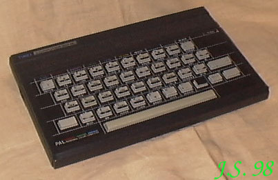

<>
TIMEX
Komputery Sir Clive'a Sinclaira doczekały się wielkiej ilości klonów.
W Portugalii produkowane były komputery zgodne z ZX Spectrum, ale pozbawione większości
ich wad. Miały dobrą klawiaturę i gniazdo dżojstika. Ale nadal nie poprawiono błędów
w ROM-ie...
2048

Procesor Z80 / 3,5MHz
RAM 48kB.
ROM 16kB.
Procesor graficzny - brak.
Rozdzielczość maksymalna 512 X 192
Grafika 8 kolorów w dwóch stopniach jasności.
Tekst 24 linie po 32 znaki.
Porty: magnetofon, dżojstik (Kempston), szyna krawędziowa.
Zewnętrzne peryferia: magnetofon, drukarka, FDD300, FD3.
Dźwięk: jednokanałowy generator, wbudowany głośnik.
2068
Model ten "produkowany" był w Polsce w firmie Unipolbrit pod nazwą
"Unipolbrit 2086"
Procesor Z80 / 3,5MHz
RAM 48kB.
ROM 24kB.
Procesor graficzny - brak.
Rozdzielczość maksymalna 512 X 192
Grafika 8 kolorów w dwóch stopniach jasności.
Tekst 24 linie po 32 znaki.
Porty: kartridż, magnetofon, dżojstik (Kempston), szyna krawędziowa.
Zewnętrzne peryferia: magnetofon, drukarka, FDD300, FD3.
Dźwięk: generator AY3-8912, wbudowany głośnik.